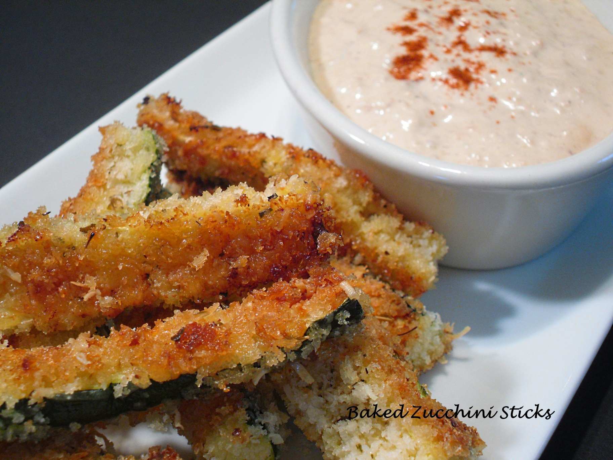

Baked Zucchini Sticks and Sweet Onion Dip
Baked Zucchini Sticks and Sweet Onion Dip served in a white plate. Photo from Foodista.
About
Guilt-free way to enjoy these crunchy restaurant-style zucchini stick. Recipe from Foodista and created by Patricia Stagich.
Ingredients
For the Dip:
- 1 Tbsp. butter
- 1 medium sweet onion, peeled and sliced
- 2 Tbsp. cider vinegar
- 2 Tbsp. honey
- 1 Tbsp. prepared mustard
- 1 cup mayonnaise
- Salt and pepper to taste
For the Zucchini Sticks:
- 3 medium zucchini, unpeeled, cut into 3" long sticks
- 1 tsp. salt
- 1 cup Panko breadcrumbs
- 1/2 cup freshly grated Parmesan cheese
- 1 Tbsp. oregano or pizza seasoning
- Olive oil spray
- 2 large eggs, lightly beaten
Preparation
To make the Dip:
- Melt the butter in a medium frying pan over moderate heat, and add the sliced onions.
- Cook, stirring occasionally, until the onions soften, them caramelize.
- Once the onions are a medium brown, remove from heat and add the vinegar.
- Place the onions and vinegar into a small food processor.
- Add the honey and mustard, and process until smooth.
- Add the mayonnaise and salt and pepper to taste. Refrigerate, covered until ready to serve.
To make the Zucchini Sticks:
- Place the zucchini sticks in a colander and sprinkle with the teaspoon of salt.
- Let the zucchini drain for 1 hour or longer; rinse and pat dry.
- Combine the Panko, Parmesan, and oregano or pizza seasoning; set aside.
- Preheat the oven to 425 degrees F.
- Spray or oil the pan with olive oil.
- Dredge sticks a few at a time in the egg, then roll in the crumb mixture.
- Place the sticks on prepared baking sheet.
- Drizzle with about 1 Tablespoon of olive oil.
- Bake sticks for 12 minutes, turn over, and bake for an additional 8 minutes, until golden brown and crisp.